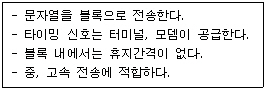

네트워크관리사-2급 (2005-07-17 기출문제)
1과목: TCP/IP
1. NIC(Network Interface Card)에 대한 설명으로 옳지 않은 것은?
- NIC는 이더넷, 토큰링, FDDI와 같은 네트워크 형태에 따라 설계된 어댑터이다.
- OSI 7 Layer 중 전송(Transport) 계층에서 사용된다.
- LAN 카드라 불리고 컴퓨터 내에 설치되는 확장카드이다.
- 다른 인터페이스와 충돌이 있을 시 I/O주소를 맞춰주어야 한다.
(정답률: 76%)

2. 다음 중 TCP/IP 응용계층 프로토콜로 옳지 않은 것은?
- HTTP
- FTP
- SMTP
- ARP
(정답률: 66%)
3. 호스트의 IP Address `50.221.100.5'에 해당하는 네트워크의 Class는?
- A Class
- B Class
- C Class
- D Class
(정답률: 85%)
4. 호스트 어드레스와 네트워크 어드레스를 구분하게 하는 것으로 어드레스제어를 쉽게 할 수 있게 하는 방법은?
- Interface
- Hop Count
- Default Gateway
- Subnet Mask
(정답률: 82%)
5. IP Header의 내용 중 TTL(Time To Live)의 기능을 설명한 것 중 옳지 않은 것은?
- IP 패킷은 네트워크상에서 영원히 존재할 수 있다.
- 라우터는 패킷의 도착시간을 기록, 처리 한 만큼 초단위로 1씩 감소한다.
- 라우터는 패킷의 헤더를 처리할 때마다 1씩 감소시킨다.
- IP 패킷이 네트워크상에서 얼마동안 존재 할 수 있는 가를 나타낸다.
(정답률: 83%)
6. OSI 7 Layer의 전송(Transport) 계층에 속하며, 사용자에게 신뢰할 수 있는 데이터 전송을 지원하는 인터넷 프로토콜은?
- IP
- TCP
- UDP
- RARP
(정답률: 83%)
7. UDP 헤더 구조에 대한 설명으로 가장 옳지 않은 것은?
- Source Port - 송신지 주소를 나타내는 필드
- Destination Port - 선택적 필드로 사용하지 않을 때는 ZERO로 채워지는 필드
- Checksum - 오류 검출을 위한 필드
- Length - UDP 데이터 그램의 길이를 나타내는 필드
(정답률: 68%)
8. ARP와 RARP에 대한 설명으로 옳지 않은 것은?
- RARP는 브로드캐스팅을 통해 해당 네트워크 주소에 대응하는 하드웨어의 물리적 주소를 얻는다.
- RARP는 로컬 디스크가 없는 네트워크상에 연결된 시스템에 사용된다.
- ARP를 이용하여 중복된 IP Address 할당을 찾아낸다.
- ARP와 RARP는 IP Address와 이더넷(Ethernet) 주소를 Mapping하는데 관여한다.
(정답률: 60%)
9. ICMP의 Message Type 필드의 유형과 질의 메시지 내용이 잘못 연결된 것은?
- 0 - Echo Reply : 질의 메시지에 응답하는데 사용된다.
- 5 - Echo Request : 네트워크상에서 두 개 이상 장비의 기본 연결을 검사하기 위해 사용된다.
- 13 - Timestamp Request : 호스트 간의 동기를 맞추고 성능을 평가하기 위해 사용된다.
- 17 - Address Mask Request : 장비의 서브넷 마스크를 요구하는데 사용된다.
(정답률: 59%)
10. TCP/IP 프로토콜 중에서 IP 계층의 한 부분으로 에러 메시지와 같은 상태 정보를 알려주는 프로토콜은?
- ICMP(Internet Control Message Protocol)
- ARP(Address Resolution Protocol)
- RARP(Reverse Address Resolution Protocol)
- UDP(User Datagram Protocol)
(정답률: 90%)
11. 다음 중 NetBIOS 이름을 IP Address로 사상(Alias)하기 위해 사용되는 것은?
- DHCP
- DNS
- TCP/IP
- WINS
(정답률: 54%)
12. Telnet 접속 방법으로 옳지 않은 것은?
- Telnet 도메인 이름
- Telnet 포트 번호
- Telnet 서버 이름
- Telnet IP_Address
(정답률: 64%)
13. URL에 대한 설명 중 옳지 않은 것은?
- URL은 인터넷상의 정보 위치를 나타내기 위한 방법으로서 인터넷의 모든 자원 및 서비스에 대해 사용되는 표준 명명 규칙이다.
- URL의 구성은 프로토콜, 호스트 명, 도메인 명, 디렉터리 이름, 파일 이름순으로 구성되며 [protocol://host.domain /directory/file] 형식으로 표현될 수 있다.
- URL은 지정된 컴퓨터를 식별하기 위해 사용되는 것으로서 전 세계적으로 유일한 이름을 가질 뿐만 아니라 하나의 도메인 이름은 오직 하나의 호스트와 대응할 수 있다.
- URL에 참여할 수 있는 프로토콜들로는 HTTP를 비롯, FTP, Telnet 등을 이용할 수 있다.
(정답률: 76%)
14. 다음 프로토콜 중에서 하이퍼미디어, 하이퍼텍스트를 통한 클라이언트와 서버간의 통신에 이용되는 것은?
- SMTP
- HTTP
- POP3
- SNMP
(정답률: 83%)
15. FTP에 관한 설명으로 가장 옳은 것은?
- 서로 다른 컴퓨터 사이의 파일 전송서비스를 제공한다.
- 서버에 어떤 파일이 있는지를 조사하는데 활용된다.
- 어떤 그룹의 방대한 문서 정보를 정확하고 신속하게 검색하는데 이용된다.
- 하이퍼텍스트 형식으로 정보를 공유하기 위한 시스템이다.
(정답률: 85%)
16. 인터넷 메일 확장자로서 사용자간의 바이너리(Binary) 파일전송에 관한 인터넷 표준안을 지칭하는 것은?
- MIME
- FTP
- Archie
- SMTP
(정답률: 54%)
17. TCP/IP 계층 모델 중 인터넷 계층에 속하는 것으로 멀티캐스트 그룹멤버 관리와 관련된 역할을 수행하는 프로토콜은?
- ARP
- ICMP
- IGMP
- IP
(정답률: 87%)
2과목: 네트워크 일반
18. Digital 전송의 특징으로 옳지 않은 것은?
- 데이터 전송 시 Digital 신호를 이용한다.
- 신호 재생성기로 증폭기(Amplifier)를 이용한다.
- Analog 전송보다 에러 확률을 감소시킬 수 있다.
- 리피터(Repeater)를 거치더라도 잡음까지 신호를 재생성 하지 않는다.
(정답률: 55%)
19. 다음 설명에 해당하는 전송방식은?

- 비동기전송방식
- 보조동기방식
- 혼합동기방식
- 동기식전송방식
(정답률: 64%)
20. 일반적으로 PC에서 TCP/IP 망을 구성하는데 필요한 항목으로 가장 옳지 않은 것은?
- IPX/SPX 주소
- IP Address
- DNS 서버 주소
- 서브넷 마스크
(정답률: 76%)
21. 메일 서비스와 가장 관계가 먼 프로토콜은?
- SMTP
- FTP
- POP3
- MIME
(정답률: 77%)
22. 네트워크의 관리 및 네트워크의 장치와 그들의 동작을 감시, 관리하는 프로토콜은?
- SMTP
- SNMP
- SIP
- SDP
(정답률: 87%)
23. 다음의 망 연동 장치 중 네트워크 계층에서 사용하며, 여러 개의 서브네트워크를 연결할 때 사용하는 것은?
- Bridge
- Router
- Repeater
- Gateway
(정답률: 74%)
24. 송신측에서 여러 개의 터미널이 하나의 통신 회선을 통하여 신호를 전송하고, 전송된 신호를 수신측에서 다시 여러 개의 신호로 분리하는 것은?
- 다중화 장치(Multiplexing)
- 변복조기(MODEM)
- 디지털 서비스 유닛(DSU)
- 코덱(CODEC)
(정답률: 74%)
25. 전송계층에서 동작하는 프로토콜들만으로 구성된 것은?
- IP, TCP, NetBEUI, IPX
- IP, TCP
- TCP, UDP
- NetBEUI, IP
(정답률: 82%)
26. IEEE 표준안 중 Ethernet에 관한 표준안은?
- IEEE 802.3
- IEEE 802.4
- IEEE 802.5
- IEEE 802.6
(정답률: 78%)
27. 통신을 원하는 두 실체(Entity) 간에 무엇을, 어떻게 언제 통신할 것인가에 대해 서로 약속한 일련의 절차나 규범의 집합은?
- Program
- Process
- Interface
- Protocol
(정답률: 86%)
3과목: NOS
28. 네트워크 인터페이스가 내장된 프린터 디바이스의 사용으로 관계가 없는 것은?
- 네트워크 인터페이스 프린터 디바이스는 네트워크에 직접 연결되므로 IP Address가 할당된다.
- 표준(Standard) TCP/IP 프린터 포트를 추가하여 사용 할 수 있다.
- 네트워크에 연결되어 있으므로 여러 사용자가 공유하기 쉽다.
- 네트워크 인터페이스 프린터 디바이스의 포트 이름은 URL 방식으로 입력한다.
(정답률: 57%)
29. IIS(인터넷 정보 서비스)에서 작업할 수 있는 서비스로 옳지 않은 것은?
- FTP(File Transfer Protocol)
- DHCP(Dynamic Host Configuration Protocol)
- NNTP(Network News Transfer Protocol)
- SMTP(Simple Mail Transfer Protocol)
(정답률: 60%)
30. IIS 웹 서버의 설정 중 하루에 평균적으로 방문하는 사용자 수를 설정하기 위해 사용하는 탭은?
- 성능 탭
- 문서 탭
- 웹 사이트 탭
- 홈 디렉터리 탭
(정답률: 53%)
31. 다음 중 DNS 서버 종류로 옳지 않은 것은?
- 주 네임 서버(Primary Name Server)
- 보조 네임 서버(Secondary Name Server
- 마스터 네임 서버(Master Name Server)
- 슬레이브 네임 서버(Slave Name Server)
(정답률: 67%)
32. FTP 서버 운영자가 본인이 관리하는 FTP 서버의 세션 관리 중에서 할 수 없는 것은?
- FTP 사용자 세션 보기
- 다운로드 할 수 있는 파일의 형식 제한
- 접속된 사용자의 연결 시간제한
- FTP 사용자 세션 연결 끊기
(정답률: 52%)
33. 네트워크 관리자인 당신은 보안상의 이유로 FTP 서버의 기본 포트를 변경하려고 한다. 당신의 네트워크 서버에는 메일서버와 함께 웹 서버, FTP 서버도 같이 있다. 다음 중 사용가능한 포트 번호는?
- 25
- 110
- 81
- 21
(정답률: 46%)
34. Windows 2000 Server의 WINS 서버에 대한 설명으로 옳지 않은 것은?
- WINS 서버가 실행되는 호스트는 동적 IP Address를 사용하여야 한다.
- NetBIOS 네트워크 작업을 지원하는 마이크로소프트사의 운영체제가 설치된 로컬네트워크에 사용되는 동적 호스트 이름 기반의 주소배정 기법이다.
- 호스트 이름을 TCP/IP 주소로 맵핑하는 데이터베이스를 유지함으로써 TCP/IP의 모든 장점을 이용하여 쉽게 다른 호스트와 통신할 수 있다.
- 많이 요청되는 이름 번역 요청에 대한 브로드캐스트 패킷을 가로채고 내부에서 처리하여 네트워크의 부하를 줄일 수 있다.
(정답률: 37%)
35. DHCP 서버에 대한 설명으로 맞는 것은?
- 도메인 이름을 IP Address로 변환 하는 일을 담당하는 서버이다.
- 서로 다른 서브넷(Subnet)을 연결하는 역할을 담당한다.
- 특정 시점의 네트워크에 연결된 컴퓨터에 동적으로 IP Address를 할당한다.
- 원하는 파일을 찾아 전송하는 역할을 담당한다.
(정답률: 76%)
36. Active Directory의 논리적 구조가 아닌 것은?
- Domain
- Tree
- Forest
- Graph
(정답률: 71%)
37. Windows 2000 Server의 설치 시에 기본적으로 설치되는 것은?
- SNMP
- TCP/IP
- DNS
- FTP
(정답률: 66%)
38. 시스템 인터페이스 정보를 출력하면서 송수신 패킷 수 및 오류수 충돌횟수, 현재 출력 큐에 대기 중인 패킷 등에 관한 정보를 제공하는 것은?
- ARP
- Netstat
- Filter
- ICMP
(정답률: 50%)
39. 파티션을 FAT에서 NTFS로 변환하는 명령은?
- convert C: /FS:FAT
- convert C: /NTFS:FAT
- convert C: /FAT:NTFS
- convert C: /FS:NTFS
(정답률: 45%)
40. 한 개의 시스템 C 드라이브에 Windows 2000 Server와 Windows 98로 멀티부팅을 사용하기 위한 시스템 설정으로 가장 올바른 것은?
- 하드디스크의 주 파티션을 FAT로 포맷한다.
- 하드디스크의 주 파티션을 NTFS로 포맷한다.
- Windows 2000 Server는 NTFS로, Windows 98은 FAT로 포맷한다.
- 파일 시스템에 상관없이 Windows 2000 Server는 주 파티션에 Windows 98은 확장 파티션에 설치한다.
(정답률: 27%)
41. Windows 2000 Server의 계정에 대한 설명으로 잘못된 것은?
- 내장 사용자 계정, 로컬 사용자 계정, 도메인 사용자 계정으로 구분된다.
- 로컬 사용자 계정은 로컬 컴퓨터로 로그 온 하기 위해 생성된 계정이다.
- 삭제된 로컬 사용자 계정은 같은 ID로 등록하면 이전과 동일한 사용자로 인식한다.
- 내장 사용자 계정은 Windows 2000 Server 설치 시에 자동으로 생성된 계정이다.
(정답률: 79%)
42. 사용자의 명령어를 Kernel에 전달해주는 역할을 하는 것은?
- System Program
- Loader
- Shell
- Directory
(정답률: 81%)
43. 다른 운영체제와 Linux가 공존하는 하나의 시스템에서 멀티 부팅을 지원할 때 사용되며 Linux 로더를 의미하는 것은?
- MBR
- RAS
- NetBEUI
- LILO
(정답률: 66%)
44. 특정한 파일을 찾고자 할 때 사용하는 Linux 명령어는?
- mv
- cp
- find
- file
(정답률: 84%)
45. Linux에서 /home 디렉터리 밑에 icqa라는 하위 디렉터리를 생성하고자 할 때 올바르게 사용된 명령어는?
- ls /home/icqa
- cd /home/icqa
- rmdir /home/icqa
- mkdir /home/icqa
(정답률: 78%)
4과목: 네트워크 운용기기
46. 루핑(Looping) 현상을 방지할 수 있는 네트워크 경로 설정 방법은?
- 플러딩(Flooding) 기능의 사용
- 포워딩(Forwarding) 기능의 사용
- 필터링(Filtering) 기능의 사용
- 스패닝 트리(Spanning Tree) 기능의 사용
(정답률: 52%)
47. 네트워크 트래픽을 해소하기 위한 기법의 하나로써 허브와 허브를 연결하는 방식 가운데 대역폭(Bandwidth)을 넓힐 수 있는 연결방식은?
- Port Trunk
- VLAN
- LAN to LAN
- VIP
(정답률: 50%)
48. 버스형 또는 데이지 체인형 네트워크의 종단에 부착하는 장치로서 신호를 흡수함으로써 다시 반향 되지 않도록 하는 것은?
- Repeater
- Router
- Bridge
- Terminator
(정답률: 75%)
49. 광섬유의 특성 중 옳지 않은 것은?
- 광대역 전송이 가능하다.
- 손실률이 높다.
- 간섭에 강하다.
- 도청이 어렵다.
(정답률: 79%)
50. 2.4GHz에서 서비스를 제공하며 초당 11Mbps의 속도를 표준으로 하는 무선 랜 규격은?
- 802.10
- 802.11a
- 802.11b
- 802.11g
(정답률: 61%)